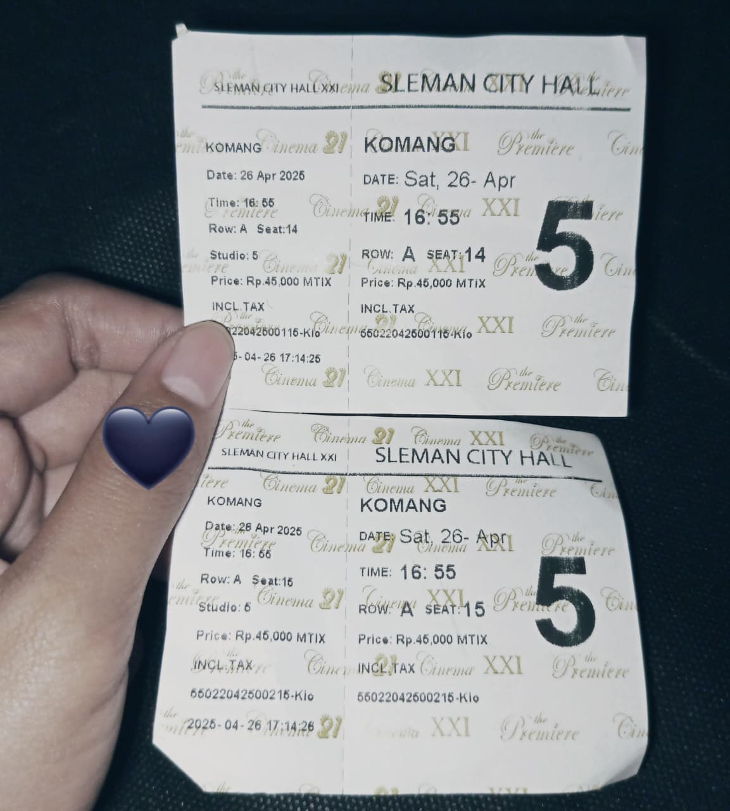
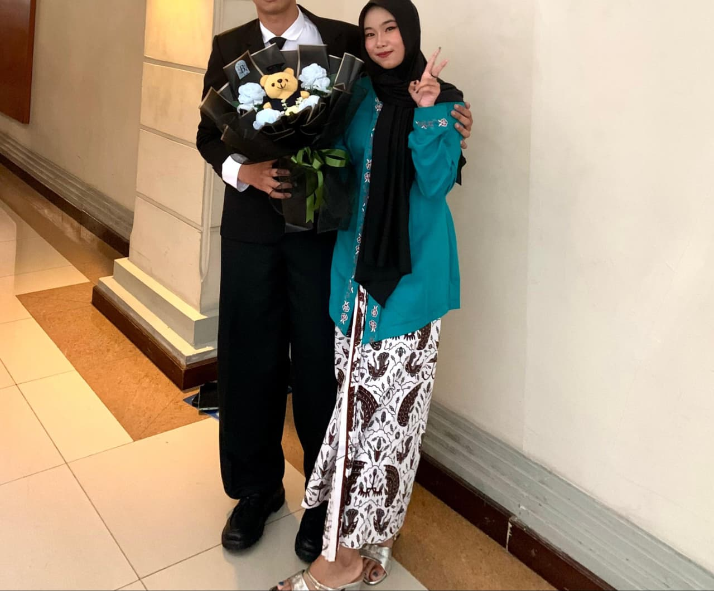
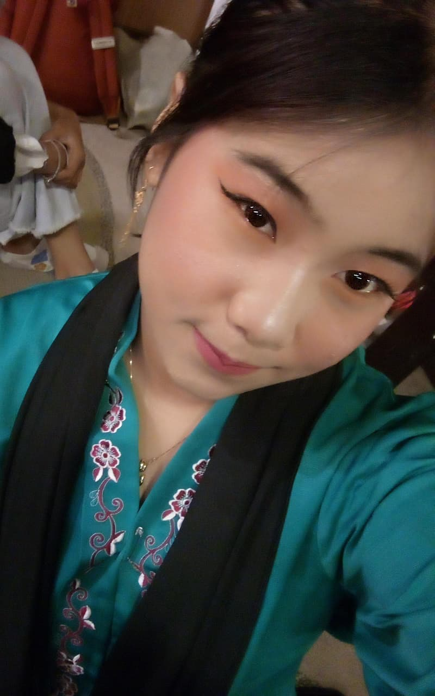
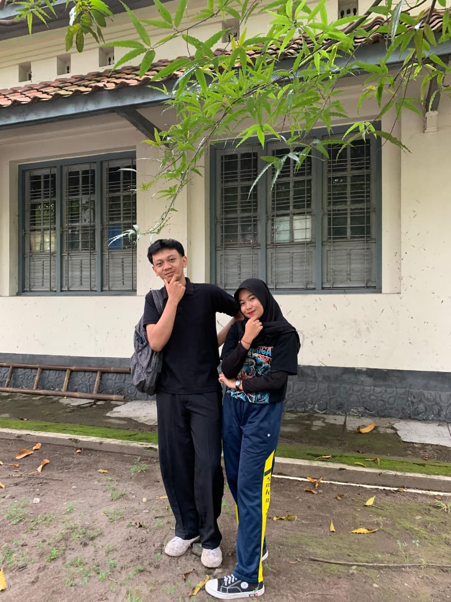
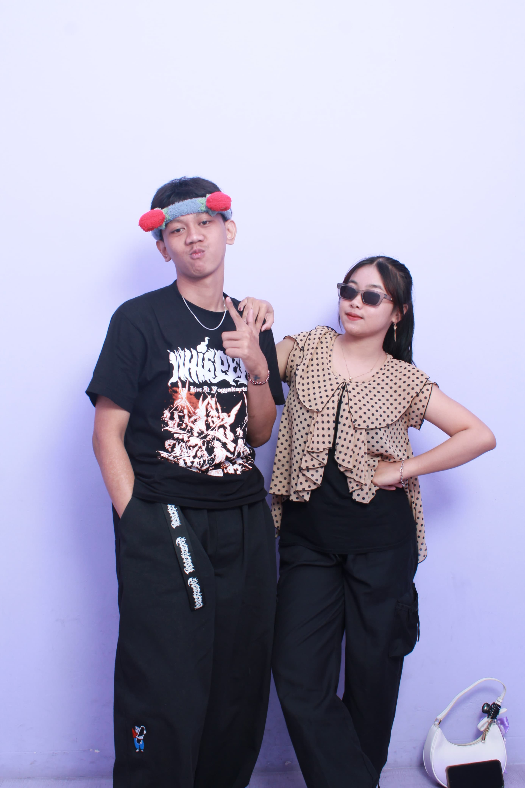
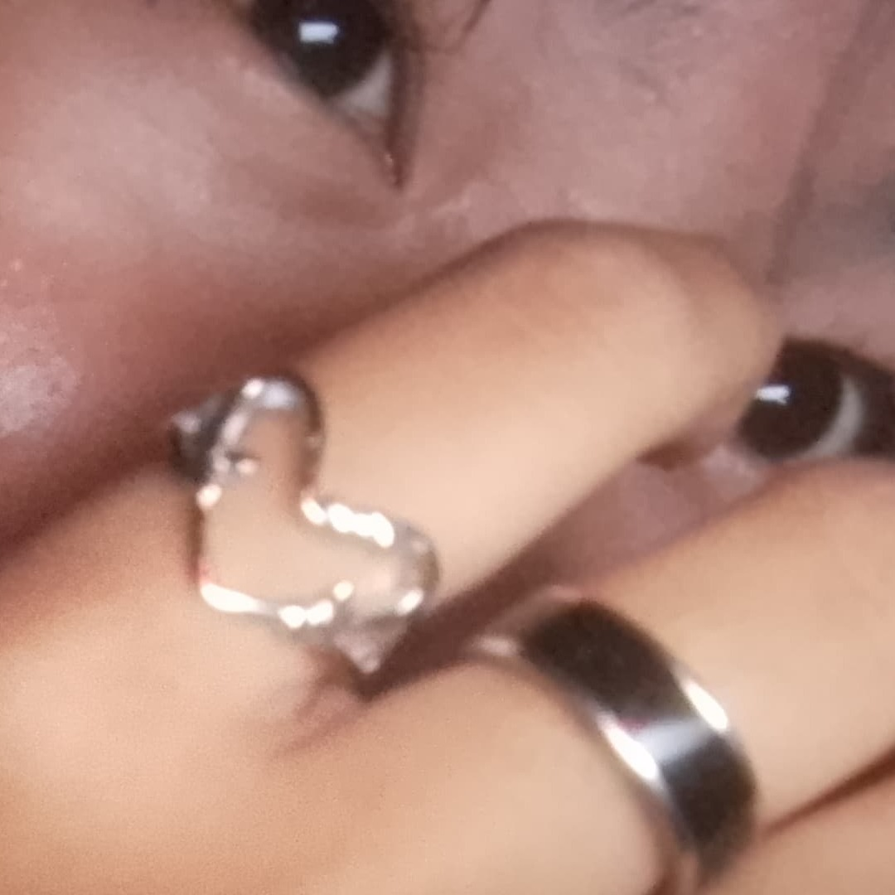
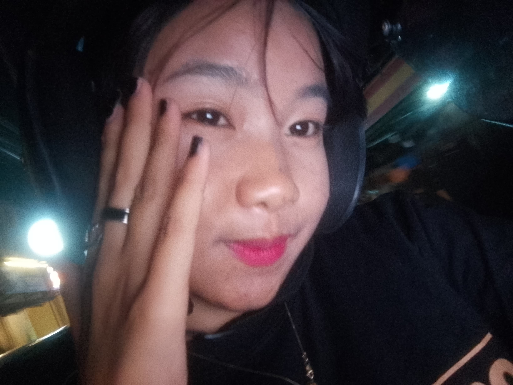
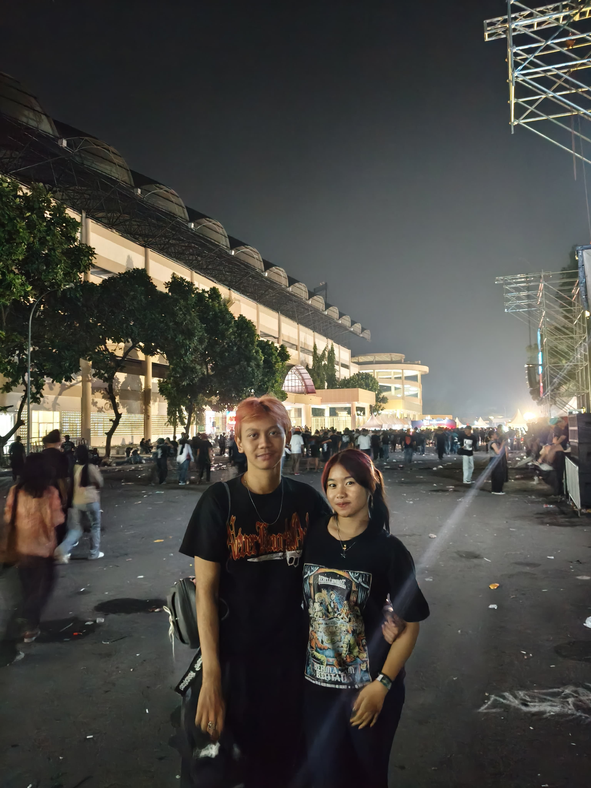
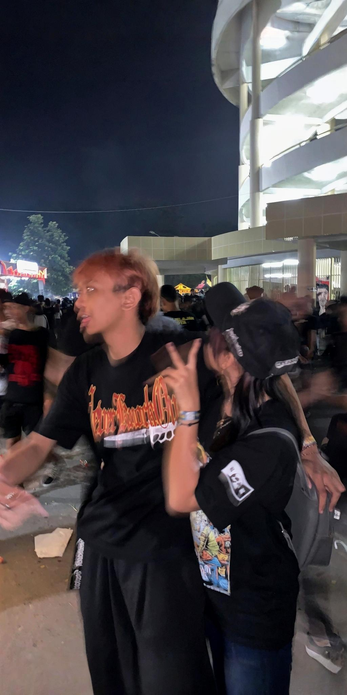

Heii Meii, ini web kecil buatan aku sendiri, isinya kenangan dan cerita lucu tentang kita ya walaupun belom semuanya karena aku masih belajar 💕









Makasiii ya!!,Meii ❤️
udahh mauu bukaa web inii yahh dan udah mauu bacaa sampai akhir, akuu bikin web inii khusus buat meisyaa dan niat akuu untuk menghibur dan siapa tau bisa buat energi kamu ke aku balik lagii mei!!, bahkan kalau bisa bikin kamuu bahagia, maaf yahh mungkinn ini masih kurang menarik tapii akuu buat inii just only for YOUUUUU🫶🫶❤️❤️, maaf kalo dari awal kita ketemu sampe sekarang aku belom bisa bahagia in kamu, tapi aku berusaha kok meii kalo kamu mau tauu, cuman emang terkadang selalu ada rintangan di setiap waktunya entah itu dari aku atau dari kamu tapii aku seneng kokk kita udah bisa sejauh ini mengukir kenangan bersama dan akuu mauu kita bisa terus bersama sampai selamanya yahh meii, if i can i want to take a moon and give it to you, i hope our love AMERTA love u meii sorry kalo aku masi selalu kurang bisa bikin kamu bahagia 🥹🥹🥹